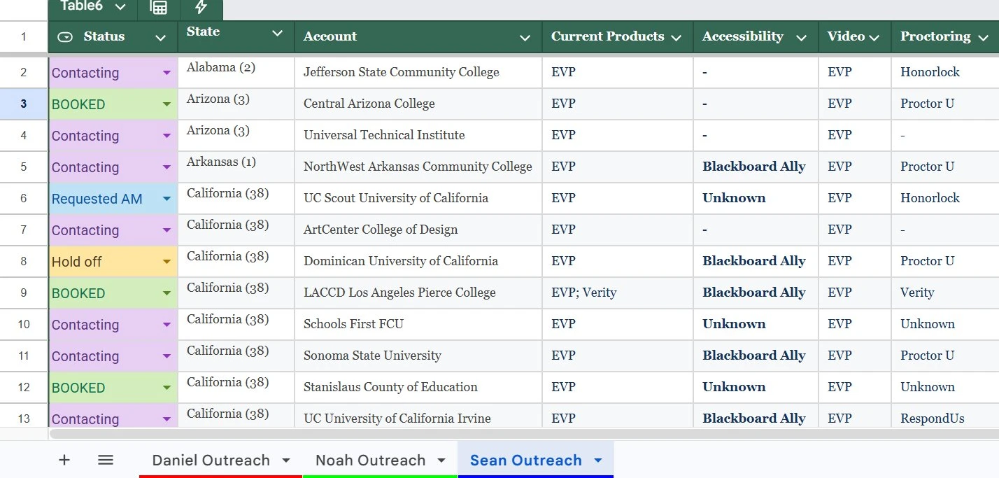

Established the foundational ownership model for SDR account allocation - a simple, centralized sheet shared across three team leads that later evolved into a full cross-product governance system.
Centralized Google Sheets system built to give three team leads shared visibility into account ownership across ~500 institutional accounts. Simple by design, this was the first structured allocation system built for the SDR organization and served as the foundation for later governance work.
Early in the SDR buildout, three team leads were working from a shared list of roughly 500 institutional accounts. Without a centralized system, account ownership was tracked informally, making it difficult to coordinate during reassignment and identify which accounts were available for reallocation.
This project introduced a single Google Sheets ownership layer - simple by design - that gave all three team leads a shared view of account status and introduced the hold state model that would later become the foundation for more complex allocation governance.
